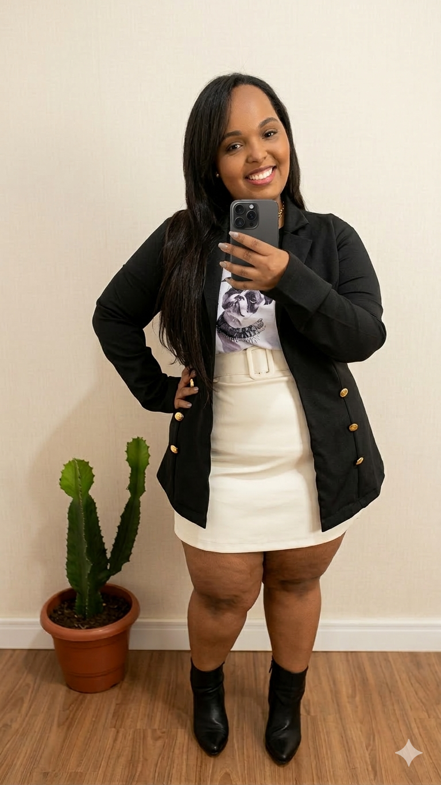

A marca que nasceu para você

Uma marca nascida da paixão pela moda
A Yab Curves nasceu em 05 de dezembro de 2019, idealizada a partir do propósito de oferecer ao público feminino curvy e plus size uma moda que traduzisse elegância, sofisticação e excelência em cada detalhe.
Fundada por Jaqueline M. S. Alves, graduada em Design de Moda pela FACED/UNA, em Divinópolis – MG, a marca surgiu da união entre conhecimento técnico, sensibilidade estética e a busca por peças que valorizassem a beleza feminina com autenticidade e requinte.
A Yab Curves vai além do vestir: representa uma proposta de moda pensada para mulheres que desejam expressar personalidade, confiança e estilo, por meio de coleções cuidadosamente selecionadas para realçar a elegância em todas as silhuetas.
— Jaqueline M. S. Alves, Fundadora
O que nos move
Elegância
Cada peça é selecionada para que você se sinta sofisticada e confiante em qualquer ocasião.
Inclusão
Acreditamos que moda é para todos os corpos. Celebramos a diversidade e a beleza de todas as silhuetas.
Qualidade
Nossa formação em Design de Moda garante um olhar técnico apurado na escolha de cada peça da coleção.
Nossa essência em imagens


Cada detalhe do seu estilo é uma forma silenciosa de revelar sua força e sua beleza.— YAB Curves